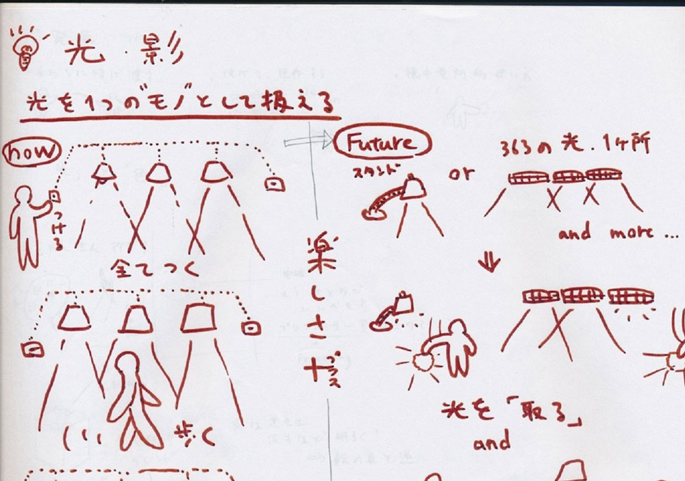
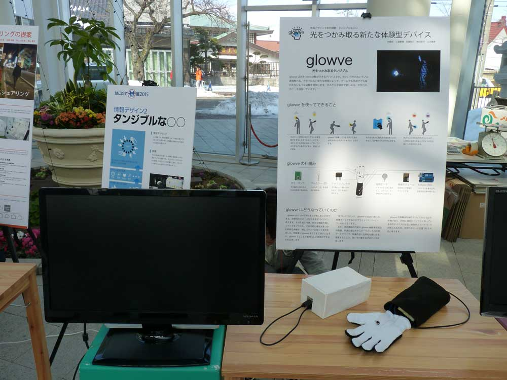
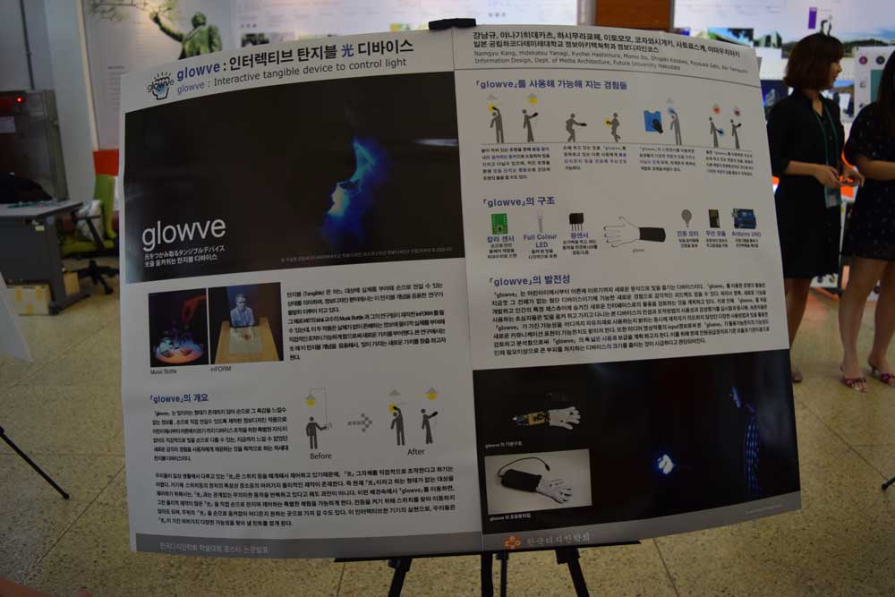
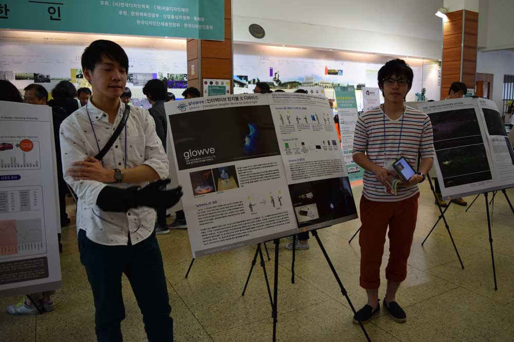

- 
- 
- 
- 
Tangible user interface
GLOWVE
二年後期に履修した情報デザインⅡの中で与えられたテーマ(Tangible：触れないものを触れるようにする)に従い提案したArduinoを基盤としたデバイスです。普段の電気の付け方に面白さや楽しさを加えて、日常の雰囲気を明るく楽しくしたいと思う気持ちから。このGLOWVE制作に至りました。今までつかめなかった光が、物を”握る”という行為によって掴めるようにタンジブル化しました。GLOWVEの形は”物を掴む”という視点から手袋という形になりました。この作品は授業でのプレゼンテーション後も高く評価され、ハミデル展や韓国に出展することができて、大きな経験を積むきっかけにもなりました。
| 期間 | 2014.11 - 2015.5 |
|---|---|
| ソフト | Illustrator,HTML,css |